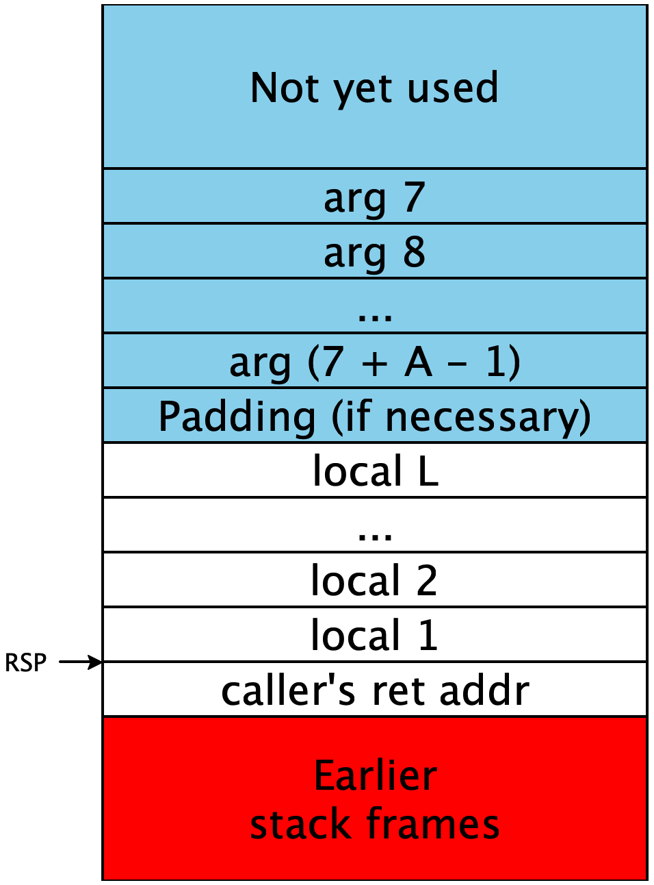
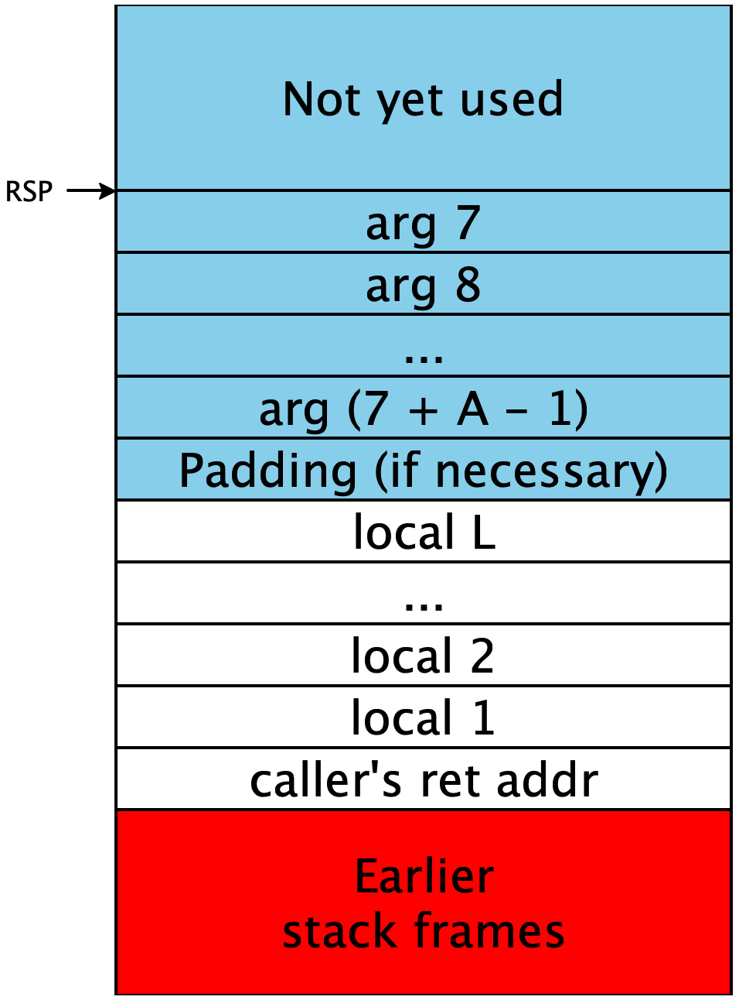
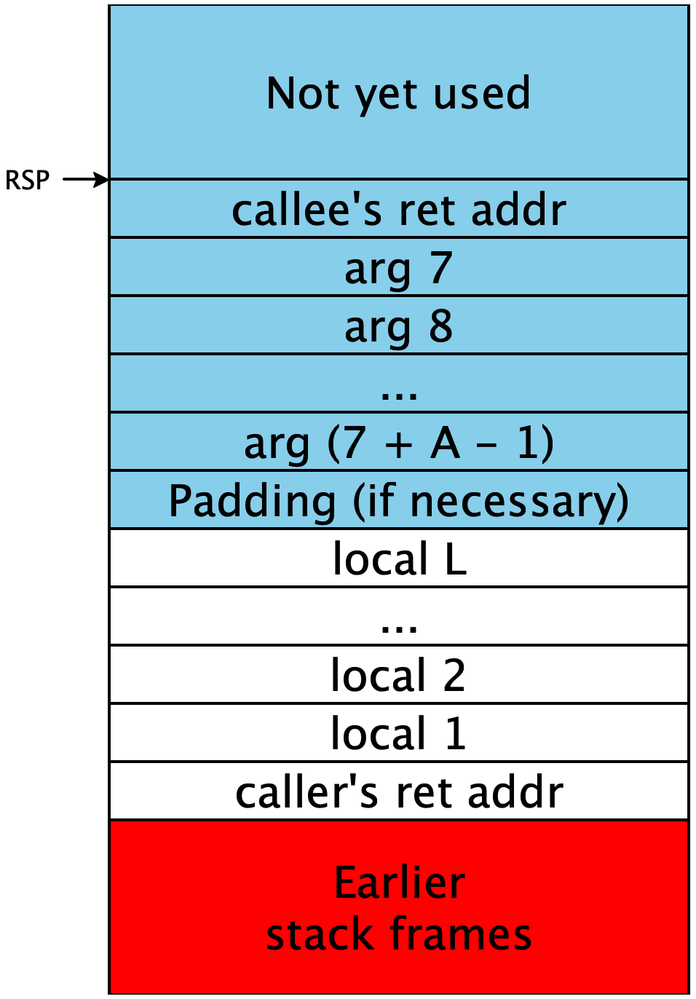

Assignment 3: Procedures
Due: Fri 02/28 at 11:59pm
git clone
In this assignment, we lift the restriction that functions can
only be called via a tail call, instead allowing for calls in
arbitrary position. We also add the ability to declare extern
functions which are then implemented in Rust.
We then extend our compiler to use a calling convention for these new
calls, without losing the efficient implementation strategy we
previously used for functions that were only tail called.
1 The Cobra Language
1.1 Concrete syntax
The only one changes to the concrete syntax in Cobra from Boa are the
addition of extern blocks, and the lifting of the restriction
that calls only be in tail position.
‹prog› ‹externs› def main ( IDENTIFIER ) : ‹expr› def main ( IDENTIFIER ) : ‹expr› ‹extern› extern IDENTIFIER ( ‹ids› ) ‹externs› ‹extern› ‹extern› ‹externs› ‹expr› let ‹bindings› in ‹expr› if ‹expr› : ‹expr› else: ‹expr› ‹decls› in ‹expr› ‹binop-expr› ‹binop-expr› IDENTIFIER NUMBER true false ! ‹binop-expr› ‹prim1› ( ‹expr› ) ‹expr› ‹prim2› ‹expr› IDENTIFIER ( ‹exprs› ) IDENTIFIER ( ) ( ‹expr› ) ‹prim1› add1sub1 ‹prim2› +-* <><=>= == &&|| ‹decls› ‹decls› and ‹decl› ‹decl› ‹decl› def IDENTIFIER ( ‹ids› ) : ‹expr› def IDENTIFIER ( ) : ‹expr› ‹ids› IDENTIFIER IDENTIFIER , ‹ids› ‹exprs› ‹expr› ‹expr› , ‹exprs› ‹bindings› IDENTIFIER = ‹expr› IDENTIFIER = ‹expr› , ‹bindings›
1.2 Semantics
The behavior of extern functions is determined by their
implementation in the stub.rs file. Functions in Cobra, unlike
Boa, can be called or tail-called. When a function is tail-called, no
new stack frame is allocated. This means that programs that use
tail-recursive functions to implement loops like
def main(n):
def fact_loop(n, acc):
if n == 0: acc else: fact_loop(n - 1, acc * n)
in
fact_loop(n, 1)Should execute in constant space, just as in our implementation of Boa.
2 Compiler Pipeline Overview
You will need to extend each of the three phases of your compiler to account for the new features in Boa. Most of the work is done in the middle-end in order to implement lambda lifting.
2.1 Frontend
There are three main changes to the frontend of the compiler:
Non-tail calls are no longer compile-time errors
Extern functions are allowed to be declared and used.
The
mainfunction can now be called and/or tail-called within the body of the program.
For scope checking, this means all extern function names as well as
main should be in scope functions in the body of the
program. Shadowing of extern functions and main by local
function definitions is allowed. The parser rejects programs that use
extern functions called main or entry, so you do not
need to worry about these corner cases in your code.
For name resolution, extern function names and main are
treated differently from local function definitions. While local
function definitions are resolved to have unique names by appending a
unique identifier, extern functions and main have to use a
particular label in the output assembly code in order to link
correctly with stub.rs. For this reason, the starter code
changes the representation of function names defined in
src/identifiers.rs as FunName. A FunName is an
enum with two cases: a function name is either Mangled,
meaning it has been appended with a unique identifier to make it
globally unique or Unmangled, meaning it has a name that is
significant in code generation.
The name resolution pass then needs to be updated as follows:
Declarations and calls to internally defined functions (besides
main) should be resolved to use mangled namesDeclarations and calls to
externfunctions should use the original name, unmangled.Calls to the top-level
mainfunction should be resolved to use the unmangled nameentry, as this is the label we ultimately produce for themainfunction.1While it would be simpler to use the labelmain, this is already used by themainfunction instub.rs
2.2 Middle-end
The middle-end of the Cobra compiler needs to accomplish several new tasks:
(OPTIONAL) Identify which Cobra function definitions need to be lifted to top-level functions and blocks in SSA
Identify when a Cobra call should be lowered to an SSA call or as an SSA branch
When calling or branching to a lifted function, appropriately adding any captured arguments
Our SSA representation has changed in a few ways:
An SSA program now consists of many mutually recursive function blocks and basic blocks. One of the function blocks should have unmangled
FunNameentry, corresponding to themainfunction of the source program.SSA
BlockBodys now contain a new operationCall, which in code generation will be compiled to use the System V AMD64 Calling ConventionWe introduce a distinction between
FunNames, which are the names used for top-level SSA functions, and may be mangled or unmangled, andBlockNames (calledLabelin the Boa starter code) which are the names of basic blocks, and are always mangled. Correspondingly aCalluses aFunNamewhereas aBranchuses aBlockName.
2.2.1 OPTIONAL: Identifying which functions should be lifted
As an optional pass to produce better code, you can implement the
should_lift function, identifying which functions in the source
program must be lifted. If you choose not to implement this pass, you
can leave should_lift unused and consider all functions
to be in the should_lift set. This produces sub-optimal code,
but only by constant factors; the time/space complexity of the input
program will still be preserved.
The specification for which local function definitions (i.e., all
functions besides extern functions main) must be
lifted is as follows. The set of functions that must be lifted is
the least set containing
Any local function that is the recipient of a non-tail call
Any local function that is called (tail or not) by a function that must be lifted
We can calculate this set as follows:
Calculate the call graph of the program: A graph whose nodes are the local function definitions and there is an edge from
ftogiffcalls (tail or not)g.Calculate the set of local functions are the recipient of a non-tail call.
The set of functions that must be lifted is then the set of all functions which are the recipient of a non-tail call, plus any functions which are reachable from that set in the call graph.
You can construct the call graph and non-tail called function sets in one pass over the AST. Then you can implement the graph reachability analysis using a worklist algorithm as described in lecture on February 12.
2.2.2 Translating Cobra Function Definitions to SSA
There are two cases to consider for compiling a Cobra function
definition to SSA. If the function is not in the
should_lift set, then it is never the recipient of a non-tail
call, and so can be compiled to a SubBlock exactly like a
function definition in the Boa compiler.
If the function is in the should_lift set, then it should not
be compiled to a SubBlock form. Instead, it should produce both
a top-level FunBlock and a top-level BasicBlock, which
both take the variables captured by the function as extra arguments.
While it is not optimal, we recommend for this assignment to simply
capture all variables that are currently in scope.
As an example, consider the following program
def main(x):
let y = x + 1 in
def f(z): z * y in
let w = 2 in
f(w) * 3In this example, f must be lifted because it is the recipient
of a non-tail call f(w). At the definition site of f,
there are two variables in scope: x,y.
Our recommended compilation for the function definition would be to produce a top-level SSA function block
fun f(x,y,z):
br f_tail(x,y,z)block f_tail(x,y,z):
r = z * y
ret r2.2.3 Translating Main to SSA
The main function is compiled somewhat specially. main doesn’t
need to be lifted in the same sense that internal functions do,
because it is already a top-level function, and so never captures any
arguments. Instead, we always compile main to a top-level function
block called entry with a corresponding basic block.
So we always generate a function block
fun entry(x):
br main_tail(x)block main_tail(x):
y = x + 1
w = 2
tmp = call f(w)
r = tmp * 3
ret r2.2.4 Translating Cobra Calls to SSA
A call to a function f in Cobra is compiled differently based on several factors:
Is it an internal or external function?
Is it a tail call or a non-tail call?
If it is an internal function, is the function lifted or not?
Let’s consider how to lower a call f(x,y,z) to SSA based on
these factors.
If f is an extern function, it should always be
compiled to use the SSA call operation. Even if it is a tail
call. As an example the call f(x,y,z) with a continuation
with VarName r and BlockBody b should be
compiled to
r = call f(x,y,z)
bf(x,y,z) should be compiled to
o = call f(x,y,z)
ret oo is a freshly generated variable name.Otherwise, f is an internal function (including main). If f is unlifted, then the call must be a tail call and can be translated directly to a branch with arguments:
br f(x,y,z)Otherwise, f is a lifted function. To compile a call to a
lifted function, we need to know what variables are captured at the
definition site of f. We can keep track of this by maintaining
a context mapping functions to an associated sequence of captured
variables, updating it as we traverse the AST.
As an example, consider a function that captures two variables a,b. Once we know what
the captured variables are, we can implement the call. If it is a
non-tail call, we are provided a continuation with VarName
r and BlockBody b. We implement this non-tail call
using the call operation, this time applying the function to the captured variables at the front:
r = call f(a,b,x,y,z)
bA tail call is compiled similarly, except that it is a branch rather than a call and should branch directly to the basic block associated with f, rather than the function block:
br f_tail(a,b,x,y,z)2.3 Backend
The backend has to handle our new SSA features: extern declarations, top-level function
and basic blocks, as well as SSA calls.
Top-level basic blocks are compiled just as any other basic block: as
a labeled block of assembly code where variables are stored at
negative offsets to rsp.
Externed function declarations need to generate corresponding x86
extern declarations.
2.3.1 Top-level function blocks
A top-level function block in SSA consists of a single branch with
arguments to a top-level basic block. The function block assumes its
arguments are placed according to the System V AMD64 calling
convention, whereas the basic block assumes its arguments are placed
at consecutive negative offsets to rsp. The generated code for
the function block accordingly moves the arguments onto the stack and
branches to the basic block.
The implementation of such a function block should be a labeled block of assembly code that moves the function arguments from the calling convention’s designated location to the location expected by the basic block.
For example, a function block with 8 arguments:
fun f_call(x1,x2,x3,x4,x5,x6,x7,x8):
br f_tail(x1,x2,x3,x4,x5,x6,x7,x8)Can be compiled to
f_call:
mov QWORD [rsp + -8], rdi
mov QWORD [rsp + -16], rsi
mov QWORD [rsp + -24], rdx
mov QWORD [rsp + -32], rcx
mov QWORD [rsp + -40], r8
mov QWORD [rsp + -48], r9
mov rax, QWORD [rsp + 8]
mov QWORD [rsp + -56], rax
mov rax, QWORD [rsp + 16]
mov QWORD [rsp + -64], rax
mov rax, QWORD [rsp + 24]
mov QWORD [rsp + -72], rax
jmp f_tail2.3.2 Implementing a System V AMD64 Call
To compile an SSA call f(..) operation, you should conform to
the System V AMD64 calling convention. To implement this we need to
calculate where we can safely allocate the callee’s stack
frame. For this we need to consider three things:
How much space do our local variables take up on the stack?
How much space do stack-passed arguments take up on the stack?
Do we need to include an extra 8-bytes of padding to maintain the correct alignment for the call?
In the general case, say we have L local variables at the
call-site and A stack-passed arguments. To account for the space
these locals and arguments take up, when we execute a call, we
need rsp to be decremented by at least (L + A) * 8.
The calling convention says that when a function starts executing, the
value of rsp modulo 16 must be 8. This means that when we make a
call, we want the value of rsp modulo 16 to be 0 (since a
call instruction pushes an 8-byte return address onto the
stack). Therefore, since we can assume our initial value of rsp
modulo 16 is 8, then we know that the value of rsp when we make
the call instruction must have a different parity, that is, the
difference with the initial value of rsp must be an odd
multiple of 8. Therefore we need an extra 8 bytes of padding when
L + A is even. So define P to be 1 if L + A
is even and 0 otherwise.
Then to implement the call, we proceed as follows. First, we move the register-passed arguments into the appropriate registers:
mov rdi, arg 1
mov rsi, arg 2
mov rdx, arg 3
mov rcx, arg 4
mov r8, arg 5
mov r9, arg 6Then we need to store the stack-passed arguments so that the stack conforms to the following structure:

Which can be implemented as follows (assuming for simplicity that the arguments are immediates):mov [rsp - (L + P + A - 0) * 8], arg 7
mov [rsp - (L + P + A - 1) * 8], arg 8
...
mov [rsp - (L + P + A - (A - 1)) * 8], arg (7 + A - 1)sub rsp, (L + P + A) * 8
And then we execute the callcall f
When the callee returns, the stack pointer will be returned to the location before the call, and so we execute
add rsp, (L + P + A) * 8Altogether the code for the call is
;; store the register-passed arguments
mov rdi, arg 1
mov rsi, arg 2
mov rdx, arg 3
mov rcx, arg 4
mov r8, arg 5
mov r9, arg 6
;; store the stack-passed arguments
mov [rsp - (L + P + A - 0) * 8], arg 7
mov [rsp - (L + P + A - 1) * 8], arg 8
...
mov [rsp - (L + P + A - (A - 1)) * 8], arg (7 + A - 1)
;; move the stack pointer, make the call and then restore the stack pointer
sub rsp, (L + P + A) * 8
call f
add rsp, (L + P + A) * 8As a concrete instance, consider the basic block
g(a,b):
c = a + b
d = c - 1
r = call f(1,2,3,4,5,6,7,8)
m = d + r
o = c + m
ret oTo compile the call f(..) to assembly we first identify:
L is 4 as there are 4 local variables in the caller’s stack frame:
a,b,c,d.A is 2 as there are 8 total arguments and the first 6 are passed in registers so there are only 2 passed on the stack.
P is 1 because A + L is even, so we need an extra 8 bytes of padding
Then this call can be implemented by the following assembly code:
;; store the register-passed arguments
mov rdi, 1
mov rsi, 2
mov rdx, 3
mov rcx, 4
mov r8, 5
mov r9, 6
;; store the stack-passed arguments
mov [rsp - 7 * 8], 7
mov [rsp - 6 * 8], 8
;; move the stack pointer, make the call and then restore the stack pointer
sub rsp, 7 * 8
call f
add rsp, 7 * 8It is very easy to make off-by-one errors when implementing such a call, which may cause either arguments to be stored in the wrong place, locals to be overwritten, or the stack to be misaligned. We highly recommend using a debugger such as lldb to inspect your stack when debugging miscompiled function calls.
Alignment errors can be particularly difficult to find because they do
not always result in a runtime error. To ensure you always produce
aligned calls, in your compiler, before you emit the instruction
sub rsp, X * 8 immediately preceding the call, panic if
the number X is even.
3 Implementation Advice
This assignment is challenging and we recommend that you start early. We suggest you implement your solution incrementally as follows:
First, adapt your Boa compiler to handle
main. In the middle-end you can just compile all calls to tail calls, as in Boa. You will only need to extend your compiler to implement the code generation for top-level function and basic blocks, leaving SSAcallunimplemented. This will get your Cobra compiler working on all existing Boa tests.Second, extend your compiler to support
externfunctions. In the front-end you will need to extend the scoping to account forexternfunctions and the resolution to produce unmangled names for these functions. In the middle-end, you need to be able to identify which calls are toexternfunctions and lower these to SSAcalls appropriately. You will also need to extend the backend to handle SSAcalloperations.Lastly, extend your compiler to support local functions that are non-tail called, that is, to perform lambda lifting in the middle-end.
At each point, you should test your solution with the provided test
cases as well as tests of your own.
This incremental approach will make it easier to debug your
compiler. For instance, if you have implemented extern
functions, you can already test that you implement calls according to
the calling convention correctly.
In debugging your implementation of calls, you may want to use a
debugger such as lldb or gdb so that you can inspect
the state of the registers and the stack in your compiled program to
see where your implementation is incorrect.
4 Starter Code
The starter code is similar to the previous assignments. We suggest
you review the changes to src/ast.rs, src/ssa.rs and
src/identifiers.rs.
You are free to use your assignment 2 solution as a starting point for your assignment 3 solution, or you may also use the provided reference solution from gitlab.
5 List of Deliverables
For this assignment you will submit your updated versions of three files:
src/frontend.rs
src/middle_end.rs
src/backend.rs
These are the only files that you can change in your submission, your code will be linked with reference versions of the other files.
We’ve included a script mk_submission.sh in the starter code
repo that should make zip file with just those three files and your
testing files that you should upload to gradescope. The testing files
are included for us to get some idea of how students are testing their
code, they are not graded.
6 Grading Standards
For this assignment, you will be autograded on whether your code implements the specification (functional correctness). Performance is not measured directly, except that there are reasonable timeouts for tests (in case your compiler or generated code has an infinite loop) and there are tests that will result in a stack overflow if tail calls are not handled properly.
We encourage you to test but your test coverage is not graded.
7 Submission
Please submit your homework on gradescope by the above deadline.
1While it would be simpler to use the label main, this is already used by the main function in stub.rs